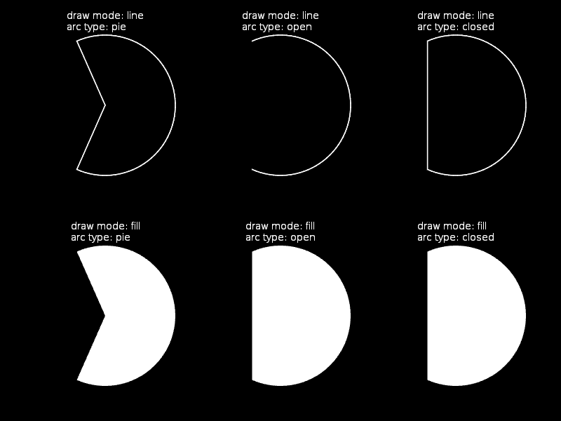

| Available since LÖVE 0.10.1
|
| This enum is not supported in earlier versions.
|
Different types of arcs that can be drawn.
Constants
- pie
- The arc is drawn like a slice of pie, with the arc circle connected to the center at its end-points.
- open
- The arc circle's two end-points are unconnected when the arc is drawn as a line. Behaves like the "closed" arc type when the arc is drawn in filled mode.
- closed
- The arc circle's two end-points are connected to each other.
Notes

See Also